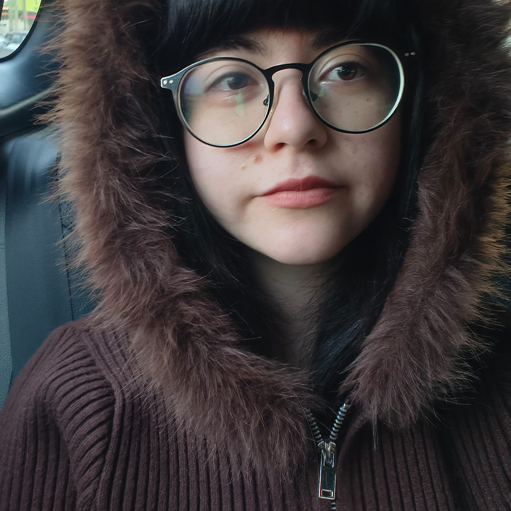

Mi nombre es Julieta, pero todos mis amigos me dicen "China". Nací el 25 de febrero del 2010 en Gral. Roca, y desde que tengo 2 años vivo en Cipolleti, estudiando desde primero en el C.E.T N°30.
¿Qué me llevó a hacer la página?
Inicialmente iba a ser el proyecto final del taller de Web 1 de mi escuela, pero quedé enamorada del concepto y decidí continuarlo en mi casa durante las vacaciones; por ahora es solo este proyecto, pero ya tengo otros pares en mente para llevar a cabo cuando tenga los conocimientos suficientes para que sean exactamente lo que imagino. Muchas gracias por leer, y si querés apoyarme en mis proyectos podés seguirme en mis redes sociales o mandarme una pequeña contribución /•᷅•᷄\੭
Mis redes sociales ▬ι═ﺤ